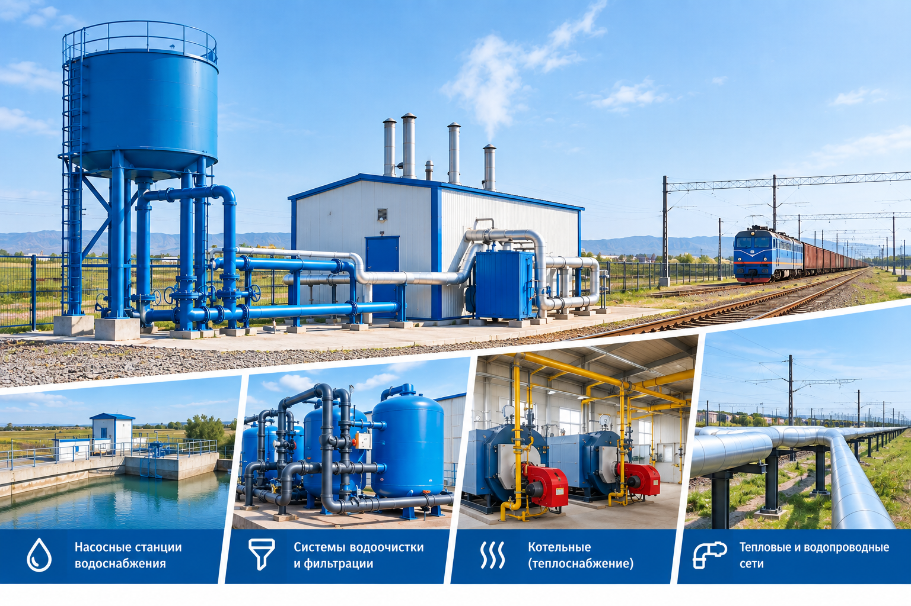
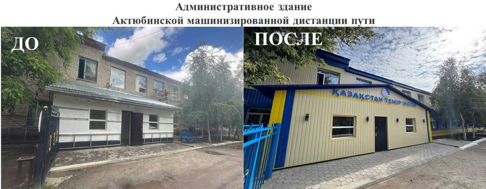
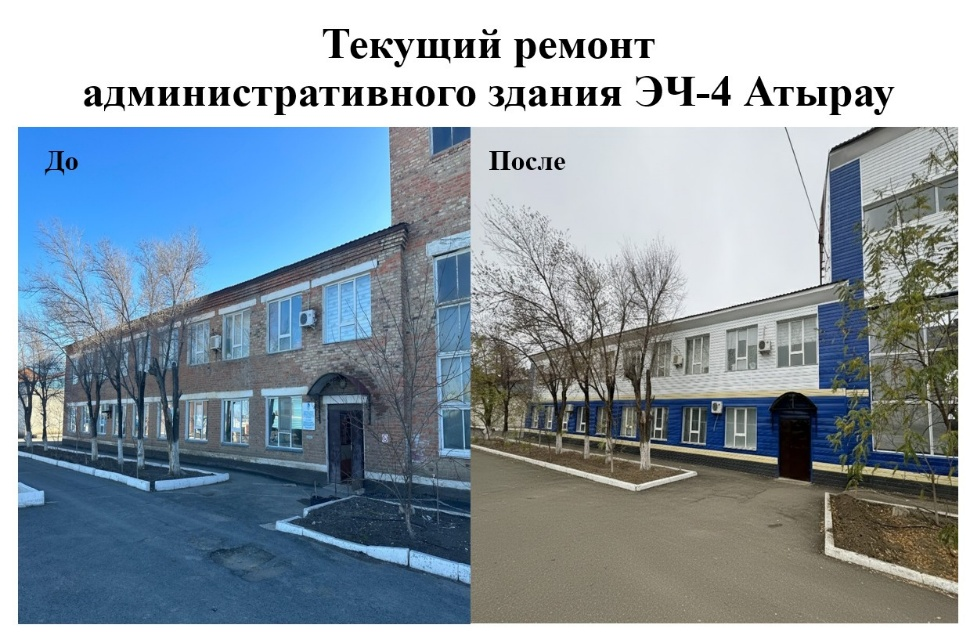
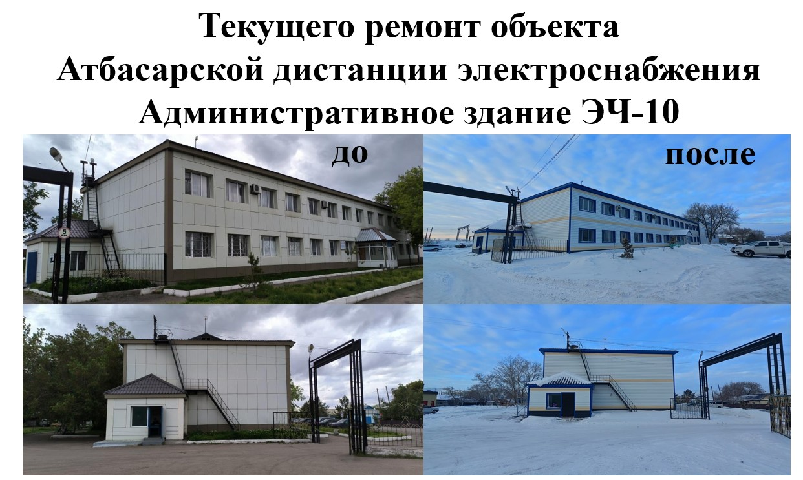
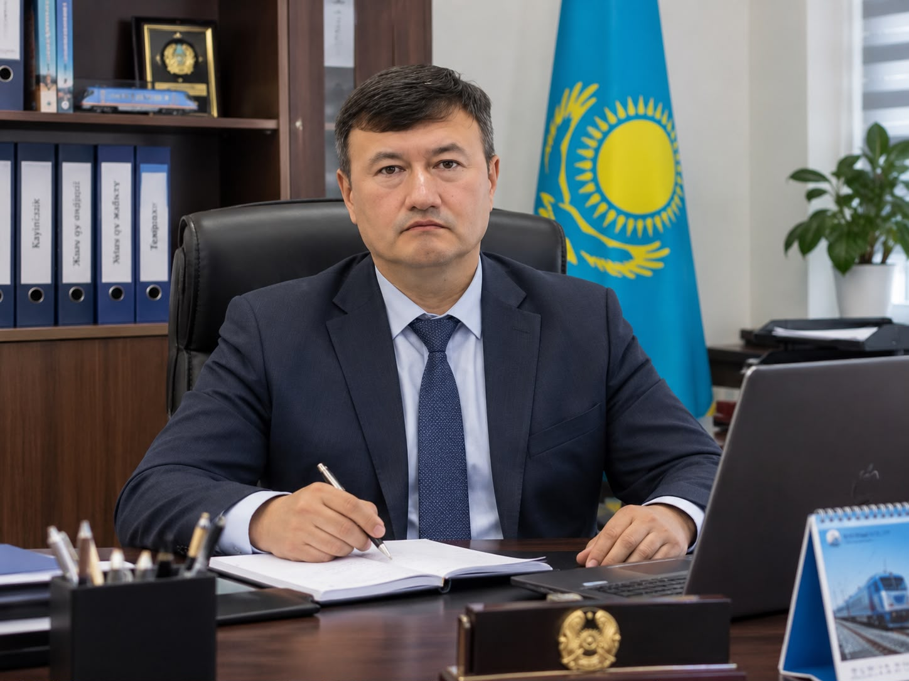
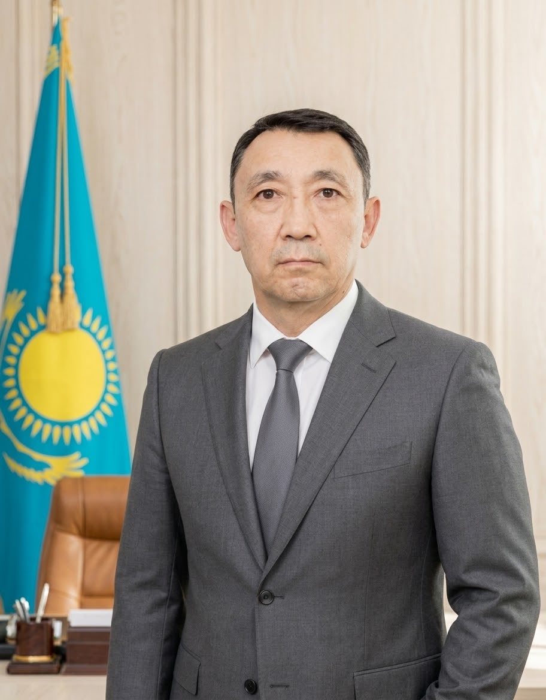
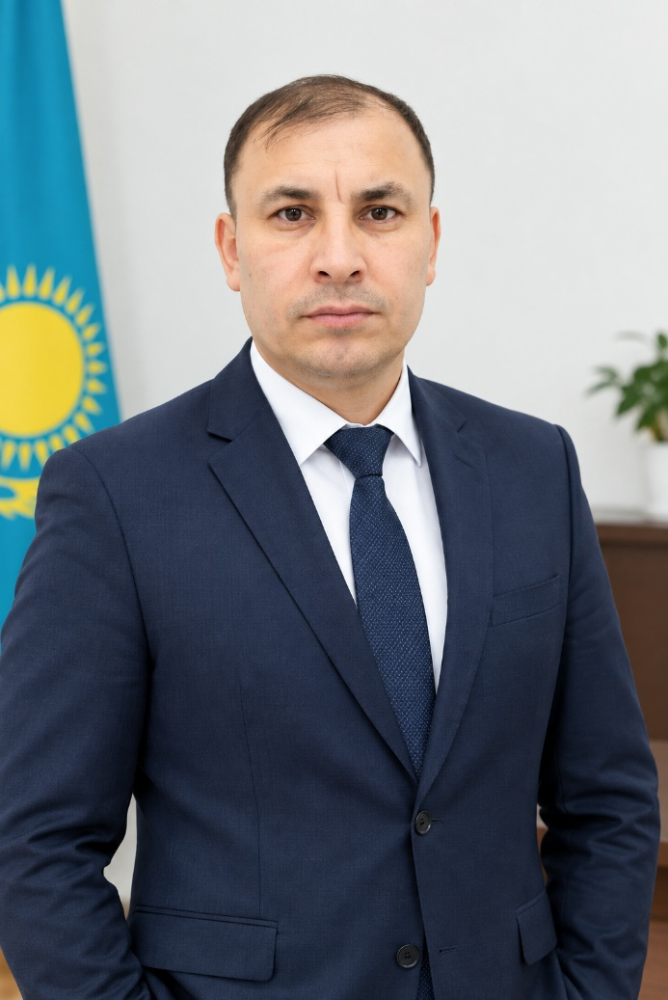
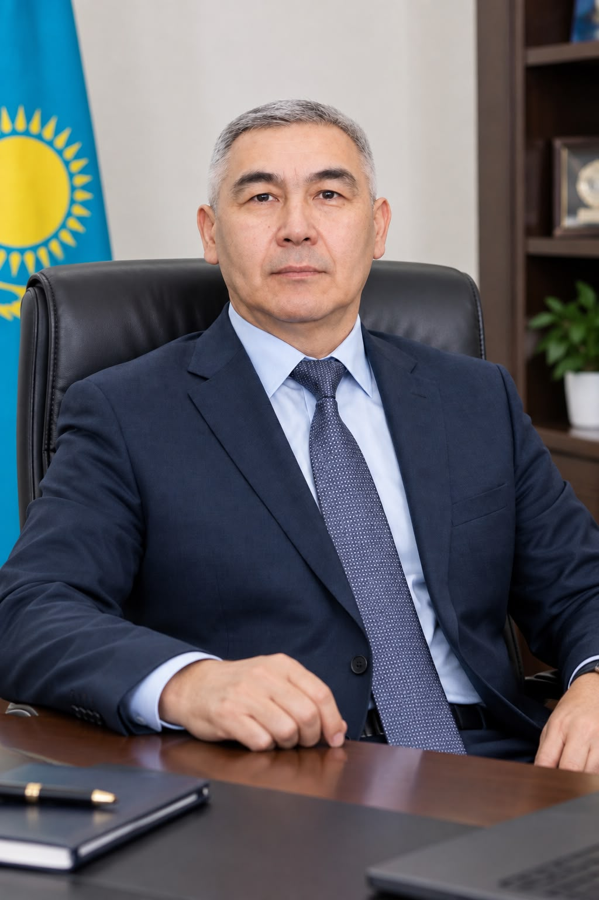

Водоснабжение
Эксплуатация водопроводных сетей, скважин, насосных станций и резервуаров, включая привозное водоснабжение.

АО «Теміржолсу»
Технологическое обеспечение непрерывного цикла водо-теплоснабжения и отвода сточных вод инфраструктуры АО «НК «ҚТЖ».
О компании →О компании
АО «Теміржолсу» — ключевой оператор по технологическому обеспечению непрерывного цикла водо-теплоснабжения и отвода сточных вод транспортной инфраструктуры АО «НК «ҚТЖ».
Компания обеспечивает эксплуатацию и техническое обслуживание коммунальной инфраструктуры железной дороги, объединяя региональные компетенции и единые производственные стандарты.
Направления деятельности
Профильные команды обеспечивают работу ключевых инженерных систем на станциях и разъездах Республики Казахстан.
Эксплуатация водопроводных сетей, скважин, насосных станций и резервуаров, включая привозное водоснабжение.
Техническое обслуживание канализационных сетей и канализационных насосных станций.
Эксплуатация котельных, электрокотлов и тепловых сетей на объектах железнодорожной инфраструктуры.
Текущие ремонты, техническое обслуживание объектов ЦЖС, зданий и сооружений.
История
24 декабря Общество создано решением Совета директоров ЗАО «НК «КТЖ» путём реорганизации ОАО «Желдорводотеплоснабжение» в форме выделения.
В рамках Программы развития транспортной инфраструктуры, утверждённой постановлением Правительства РК № 1006, Общество было реорганизовано.
К Обществу присоединены АО «Теміржолжылу» и ОАО «Желдорводотеплоснабжение», что расширило сферу деятельности.
Компания продолжает развитие в области коммунального и эксплуатационного обеспечения железнодорожной инфраструктуры.
Инфраструктура
Собственными активами Компания обеспечивает 128 пунктов, а также обслуживает объекты филиала АО «НК «КТЖ» ещё на 278 железнодорожных пунктах.
Региональная сеть
10 дочерних организаций являются отдельными субъектами естественных монополий и обеспечивают работу инфраструктуры в регионах.
Комплексно-подрядные услуги
В 2023–2025 годах выполнены работы на 906 объектах, в том числе в 26 домах отдыха локомотивных бригад.



Корпоративное управление

Генеральный директор
Председатель Правления

Заместитель генерального директора по производству

Заместитель генерального директора по экономике и финансам

Главный инженер
Главный бухгалтер
Садыркулов Р.Б. — Председатель Совета директоров
Рахимбеков А.Н. — Член Совета директоров
Абельсеитова С.К. — Независимый директор, член Совета директоров